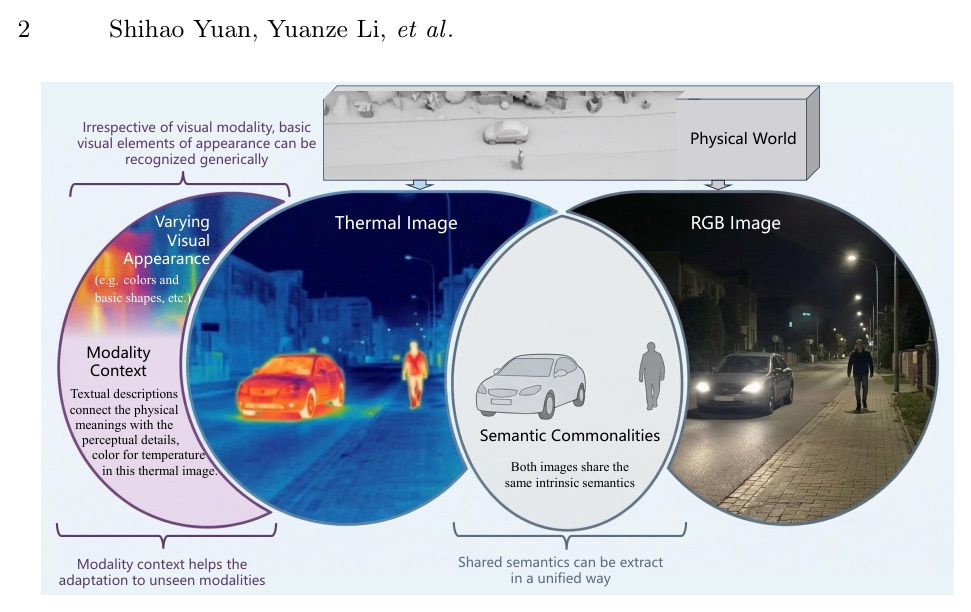
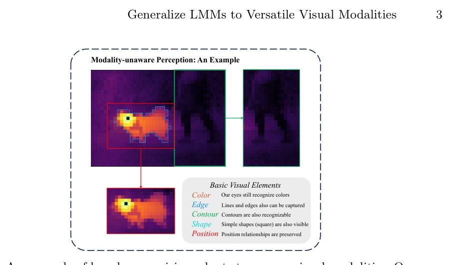
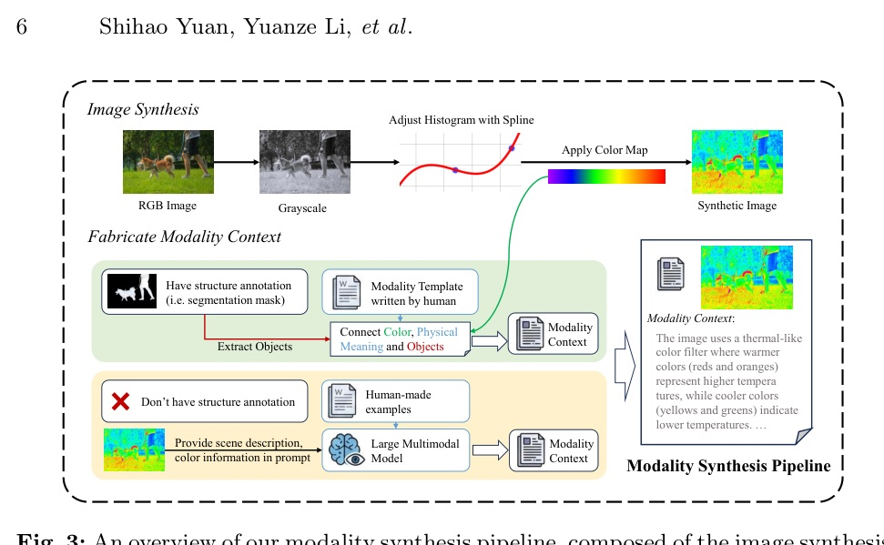
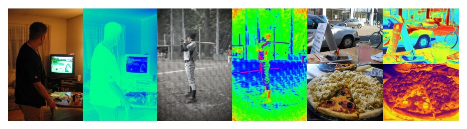
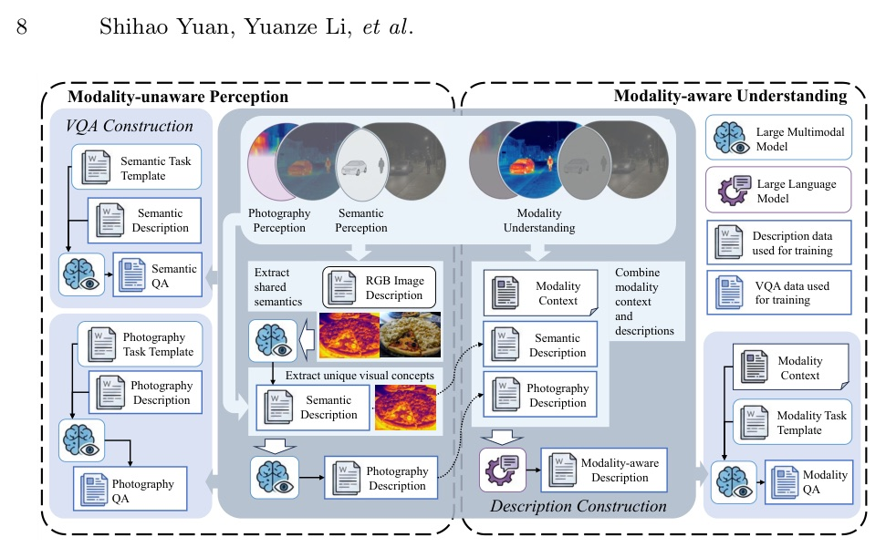
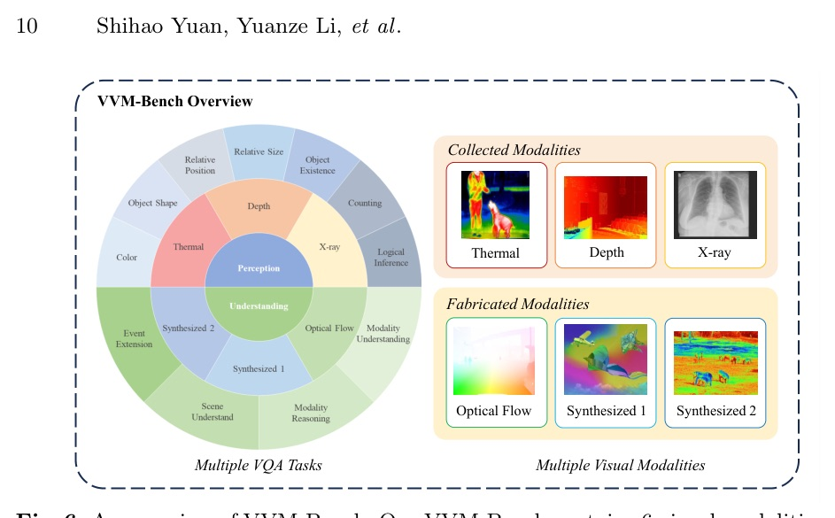

VVM-Tuning asks whether an LMM can handle thermal, depth, X-ray, optical-flow-like, and synthetic modalities without in-modality training.
Do not teach the model every sensor. Teach it to separate what the scene is from how this sensor paints it.
The paper treats non-RGB modalities as different samplings of the same physical world: shared semantics stay stable; appearances and color meanings change.






| Subset | Task intent | Context? |
|---|---|---|
| Perception | Semantics and visible attributes perceivable without modality knowledge | No |
| Understanding | Link modality appearance to physical meaning and sensor knowledge | Yes |
| Axis | Setting |
|---|---|
| Base LMMs | LLaVA-1.5 7B; Qwen2.5-VL 3B/7B; Qwen3-VL 4B/8B |
| Training | 4 NVIDIA A800 GPUs; batch size 32; AdamW; lr 1e-5; 1 epoch |
| Data | roughly 50k samples, including 12k RGB instruction samples to preserve general ability |
| Eval | choice-question VQA; model outputs option letter only |
| Model | Baseline avg | VVM avg | Gain |
|---|---|---|---|
| LLaVA-1.5 7B | 60.4% | 74.1% | +13.6% |
| Qwen2.5-VL 3B | 72.2% | 81.9% | +9.7% |
| Qwen2.5-VL 7B | 78.1% | 84.1% | +6.0% |
| Qwen3-VL 4B | 77.6% | 82.8% | +5.3% |
| Qwen3-VL 8B | 77.6% | 84.1% | +6.5% |
| Model | Baseline avg | VVM avg | Gain |
|---|---|---|---|
| LLaVA-1.5 7B | 79.4% | 84.9% | +5.6% |
| Qwen2.5-VL 3B | 86.7% | 90.6% | +3.8% |
| Qwen2.5-VL 7B | 86.2% | 90.6% | +4.5% |
| Qwen3-VL 4B | 87.9% | 89.9% | +2.0% |
| Qwen3-VL 8B | 88.3% | 91.5% | +3.2% |
The biggest proof is not the final score; it is that context rescues depth when the model otherwise sees only colors.
In real modalities, adding modality context changes understanding accuracy most for Depth. The text bridge tells the LMM how appearance maps back to physical meaning.
| Training tasks | P avg | U avg | Interpretation |
|---|---|---|---|
| None / baseline | 78.1% | 86.2% | RGB-native model before VVM-Tuning |
| Perception only | 81.7% | 88.3% | roughly half the full gain |
| Understanding only | 78.0% | 88.2% | context helps U, but P nearly returns to baseline |
| Full VVM-Tuning | 84.1% | 90.6% | best combined perception + context adaptation |
| Subset | Thermal | Depth | X-Ray | Opt.Flow | Syn.1 | Syn.2 | Total |
|---|---|---|---|---|---|---|---|
| Perception | 1330 | 1873 | 1692 | 378 | 1018 | 700 | 6991 |
| Understanding | 1386 | 2304 | 1575 | 240 | 421 | 400 | 6326 |
| Total | 2716 | 4177 | 3267 | 618 | 1439 | 1100 | 13317 |
“Effective generalization requires models to possess both modality-agnostic perception of scene semantics and the adaptability to modality-specific characteristics.”
有效泛化不只是看懂場景語意，也要能適應不同模態特有的感測 / 外觀規則。Abstract p.1
“Experiments show our VVM-tuning brought an average 8.2% improvement for all base models among 6 modalities on our VVM-Bench perception subset.”
在 6 種模態的 perception subset 上，VVM-Tuning 對所有 base model 的平均提升為 8.2%。§4.2 p.11 / Tab.1
“Our tuning only disentangles that alignment by semantics and photographics, not executing a completely new alignment or injecting new knowledge.”
這是把語意與 photographic perception 解耦，不是建立全新 alignment，也不是把新領域知識灌進模型。§A.5 p.25
VVM-Tuning is a clean reminder: for multimodal models, “more modalities” can sometimes start from better factorization of one modality.